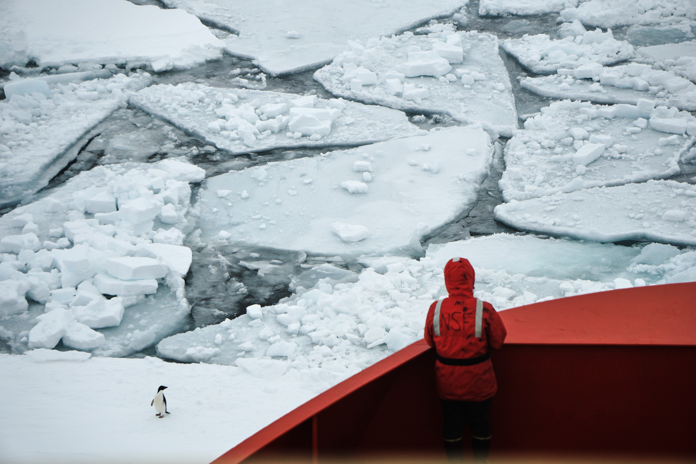
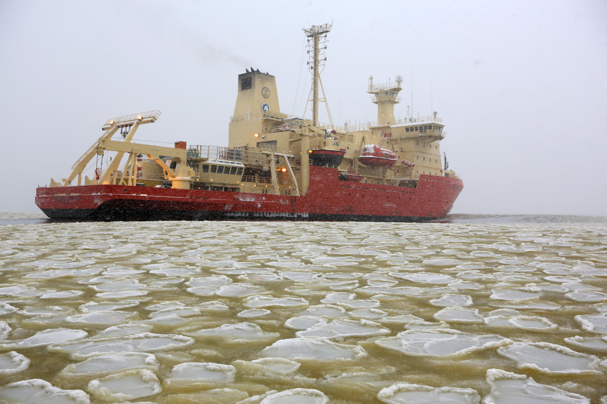
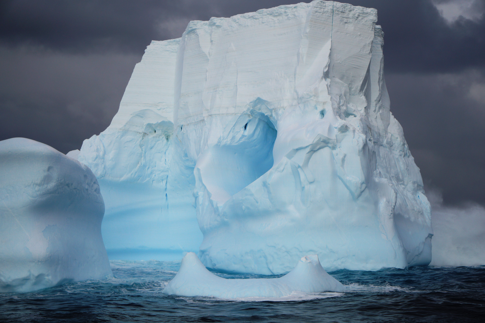

Research Projects
I conducted my PhD research in the Ross Sea, a stretch of ocean off the coast of
Antarctica that is south of New Zealand. The Ross Sea is the most biologically productive
region in the Southern Ocean and is a large atmospheric carbon dioxide sink.

The world’s oceans are becoming more acidic as the oceans absorb anthropogenic
atmospheric CO2. Polar oceans are especially vulnerable to ocean acidification
because of increased CO2 solubility in cold water. This acidic water can become
corrosive to biogenic carbonate minerals, the building blocks for the skeletons
and shells of many marine organisms. In order to predict when the Ross Sea may
become corrosive to biogenic carbonate minerals, high resolution baseline
carbon system data is required. This project involved measuring the total alkalinity of thousands
of surface water samples in the Ross Sea. Our results suggest that surface waters in
the Ross Sea will not become corrosive to biogenic carbonate minerals until the year 2070.
Publication
Code

The largest phytoplankton bloom in Antarctica occurs in the Ross Sea during the
austral summer. This phytoplankton bloom senesces during the late summer before
the formation of sea ice. Using carbon budgets, we find evidence for substantial
late summer algal productivity in a windy coastal environment. This is the first
study to document substantial late season productivity in Antarctic shelf waters,
which is associated with green frazil ice from algal accumulation. We
hypothesize that the strong coastal winds facilitate late season productivity
by preventing the formation of sea ice and providing growth limiting
micronutrients such as iron.
Publication
Code

The Ross Sea is a large atmospheric CO2 sink. During the winter, surface waters
are supersaturated in CO2. Sea ice acts as a barrier to air-sea gas exchange
and prevents significant CO2 outgassing. Once the sea ice melts in the spring,
an intense phytoplankton bloom develops and through photosynthesis causes the
surface waters to become undersaturated in CO2. This air-sea CO2 gradient, along
with winds, drives the flux of CO2 from the atmosphere into the ocean. In order to
estimate the magnitude of the annual Ross Sea CO2 sink, we model CO2 flux rates
using historical pCO2 and wind speed data from 20 cruises to the Ross Sea.
Publication
Code
Late summer phytoplankton productivity in the Ross Sea is associated with
green frazil ice. We analyze daily 500-m resolution satellite imagery for
February and March from 2003 to 2017 to identify green frazil ice hot spots
and examine interannual variability in green frazil ice extent. While
there is substantial interannual variability, green frazil ice is present
over greater than 300,000 km2 during March. Our study indicates that late
summer frazil ice-associated algal productivity may be a major phenomenon
around Antarctica that is not considered in regional carbon and ecosystem models.
Publication
Code